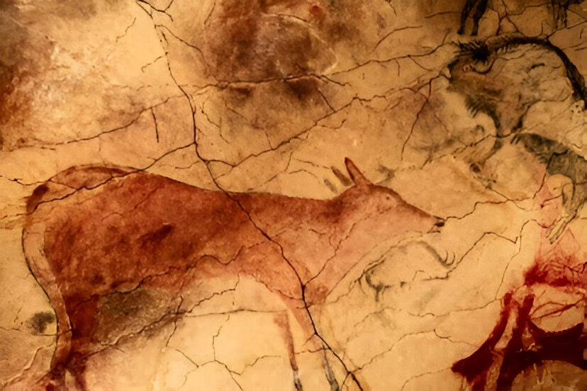
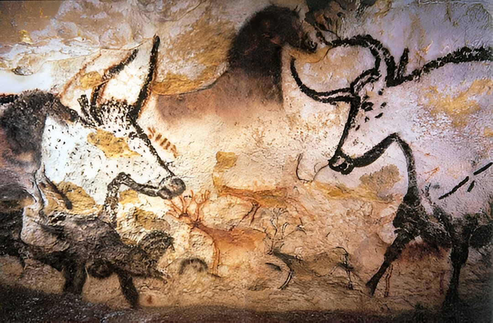

Historia del Arte
Objetivos
- Las primeras manifestaciones artísticas: arte rupestre y arte prehistórico.
Contenido:
Arte rupestre
Definición
El arte rupestre se refiere a las representaciones artísticas creadas por los seres humanos en rocas y paredes de cuevas. Estas obras de arte son algunas de las expresiones más antiguas de la creatividad humana y se encuentran en todo el mundo, desde Europa hasta África, Asia y América. Aquí tienes algunos aspectos destacados del arte rupestre:
Características
Antigüedad: El arte rupestre se remonta a la prehistoria, con algunas de las piezas más antiguas datando de hace más de 40,000 años.
Técnicas: Las técnicas utilizadas incluyen la pintura con pigmentos naturales (como óxidos de hierro y carbón), grabados y tallados en la roca.
Temática: Las representaciones suelen incluir animales (como bisontes, caballos, ciervos), figuras humanas, y símbolos abstractos y geométricos.
Ejemplos Notables
 Cuevas de Altamira (España): Las pinturas y grabados en las Cuevas de Altamira datan de entre 35,000 y 14,000 años atrás, correspondientes a los períodos del Paleolítico Superior.Los artistas utilizaron pigmentos naturales como el carbón y óxidos de hierro para crear las pinturas. También emplearon técnicas de grabado y raspado en la roca. Las representaciones incluyen animales como bisontes, caballos, ciervos y jabalíes, así como figuras humanas y signos abstractos. Los bisontes son especialmente notables por su tamaño y detalle.
 Cueva de Lascaux (Francia): Las pinturas datan de alrededor de 17,000 años, pertenecientes al período Magdaleniense del Paleolítico Superior.Los artistas de Lascaux utilizaron pigmentos naturales, como óxidos de hierro y manganeso, así como carbón, para crear sus obras. Emplearon técnicas de soplado, pintado y grabado. : Las representaciones incluyen una gran variedad de animales, como caballos, toros, ciervos, bisontes y felinos, además de figuras abstractas y signos. La cueva es especialmente famosa por su detallada y dinámica representación de animales, que muestran un profundo conocimiento del comportamiento y la anatomía de las especies representadas.
Las "Caritas" de los indios taínos ( República Dominicana): Se encuentran en diversas partes de la isla, incluyendo cuevas, rocas y sitios arqueológicos. Algunos de los lugares más conocidos son la Cueva de las Maravillas y el Parque Nacional del Este. Las caritas suelen ser grabados o petroglifos en la roca que representan rostros humanos estilizados. También pueden encontrarse representaciones de animales y figuras antropomorfas. Los taínos utilizaban herramientas de piedra para grabar sus diseños en la roca.
Significado y Función
El significado del arte rupestre es un tema de debate entre los arqueólogos y antropólogos. Algunas teorías sugieren que estas representaciones tenían un propósito ritual o religioso, tal vez relacionado con la caza o la fertilidad. Otras hipótesis consideran que podrían haber sido una forma de comunicación o una manera de registrar eventos importantes.